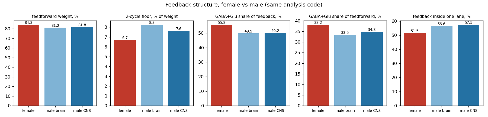
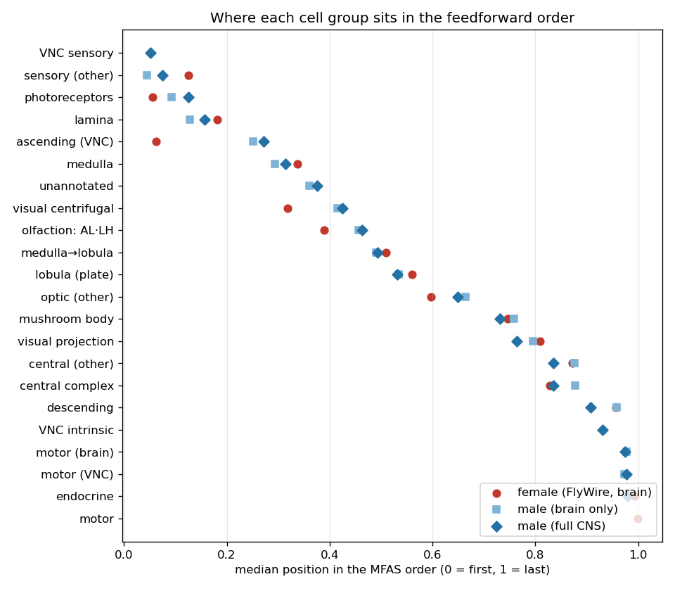
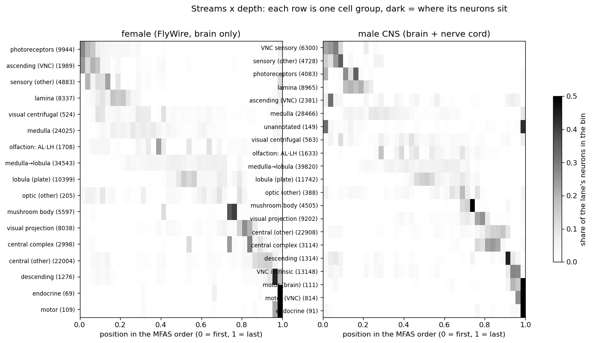
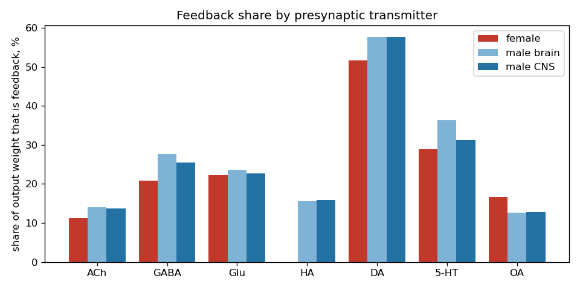
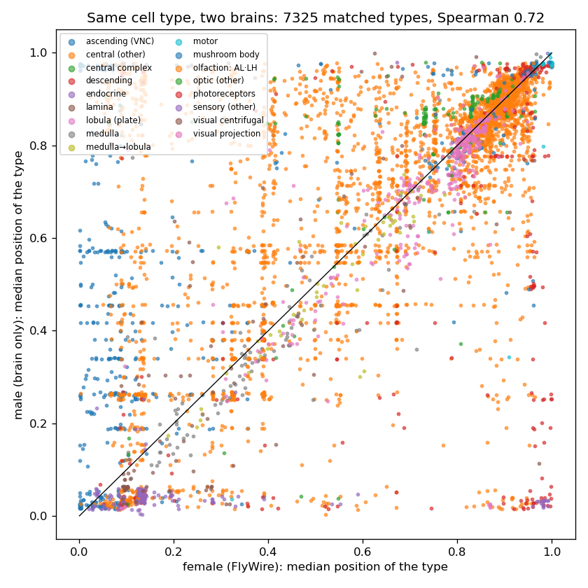
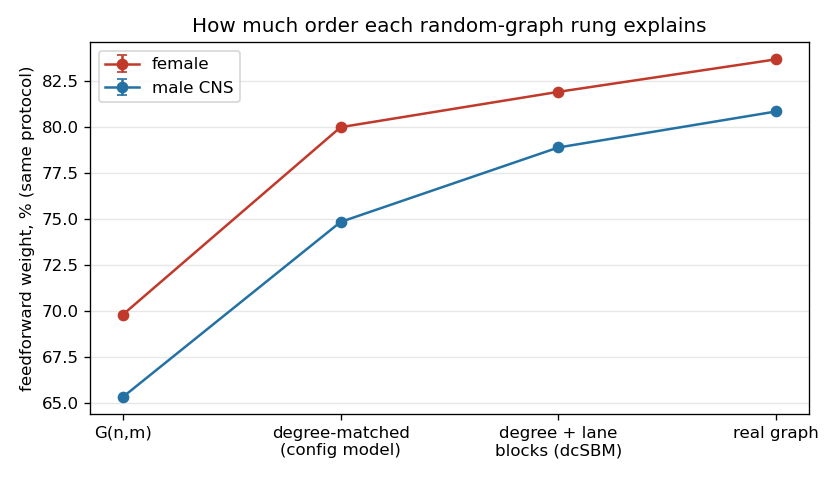

Самец и самка дрозофилы: сколько обратных связей и где они
Мы прогнали наши методы для MFAS-порядка на втором коннектоме мухи: Male CNS v1.0 (Janelia, мозг и брюшная нервная цепочка самца). Самка здесь FlyWire, тот же граф, что во всей работе. Оба графа считаются одним кодом, у обоих порог веса 2 синапса. Один прогон оптимизатора на самца, поэтому это первый проход, а не окончательный результат.
1. Самец менее «прямой», но так же, как его случайные двойники
При одинаковом протоколе мозг самца на 3 пп менее «прямой», чем мозг самки. Часть разницы связана со взаимными парами нейронов: у самца 23 % рёбер имеют встречное ребро (у самки 18 %). Из-за таких пар минимум обратной связи растёт до 8.3 % всего веса против 6.7 %. В обеих мухах эти пары дают около 42 % всей обратной связи. Это строгая нижняя граница, и она покрывает примерно половину разницы.
| самка (мозг) | самец (мозг) | самец (весь CNS) | |
|---|---|---|---|
| % вперёд, протокол 4000 эпох | 83.66 | 80.68 | 80.83 |
| доля взаимных рёбер | 18.4 % | 23.2 % | 22.3 % |
| минимум из 2-циклов, % веса | 6.72 | 8.26 | 7.64 |
| медианная длина обратного ребра | 0.133 n | 0.096 n | 0.085 n |
| в гигантской SCC | 92.8 % | 98.5 % | 98.4 % |
Строка «% вперёд» посчитана на порядках одного протокола. Остальные строки посчитаны на порядке H64; для мозга самца это порядок всего CNS, ограниченный мозгом.
Случайные двойники графа самца теряют не меньше порядка, чем реальный граф: G(n,m) на 4.5 пп, модель со степенями на 5.1 пп, модель с группами на 3.0 пп, реальные графы на 2.8 пп. Граф самца в 2.2 раза плотнее (93 ребра на нейрон против 41). Значит, разница согласуется с размером, плотностью и степенями, и лишняя обратная структура у самца для неё не нужна (раздел 6). Влияние одной плотности отдельно не выделено, а лестница самца включает брюшную цепочку. Часть разницы может давать и бюджет оптимизатора: от протокола к H64 самец прибавляет 0.98 пп, самка 0.60 пп.
Разницу нельзя приписать полу: у двух датасетов разные лаборатории, сегментация и детекция синапсов, у самца на 20 % больше нейронов. Здесь по одной мухе каждого пола.

2. Архитектура та же: сенсоры в начале, моторы в конце
Порядок групп клеток почти совпадает: фоторецепторы и сенсоры в начале, зрительные слои в анатомическом порядке, грибовидное тело и центральный мозг ближе к концу, нисходящие и моторные нейроны в самом конце. Брюшная цепочка не отдельный блок: её сенсоры стоят в самом начале (0.05), а её интернейроны и моторы в конце (0.93 и 0.98).


Клеточные типы у самца ещё компактнее: медианный разброс позиций внутри типа 0.024 n против 0.488 для случайного набора (у самки 0.044). Компактнее случайного 97.9 % типов.
3. Химия обратной связи повторяется
Тормозные медиаторы (GABA, глутамат) дают 50 % обратной связи и только 35 % прямой (у самки 56 % и 38 %). Дофамин в обеих мухах самый «обратный» медиатор: больше половины его выхода идёт назад. Ацетилхолин самый «прямой».

Полушария: у обеих мух одна сторона чаще идёт раньше (у самки левая в 57 % типов, у самца правая в 56 %, оба p = 3e-4). Направление противоположное. Зеркальный мозг почти так же хорош, как исходный, поэтому сторону, скорее всего, выбирает сам оптимизатор; по одному прогону на муху это не проверить.
Главные хабы тоже те же: 10 из 12 самых связанных нейронов тормозные, на первом месте CT1 в обеих мухах. Больше всего обратной связи отправляет APL в обеих мухах.
4. Новое: где порядок разрезает петлю «мозг → цепочка → мозг»
В FlyWire нет брюшной цепочки. Поэтому восходящие нейроны там без входов и стоят в самом начале порядка (медиана 0.06). У самца их входы есть, и они расходятся по порядку (медиана 0.27, 16 % в последней десятой). Несколько типов нисходящих нейронов и афференты Джонстонова органа переезжают из конца порядка самки в начало порядка самца. Вывод: позиции этих групп у самки частично артефакт границы датасета, сравнивать их между датасетами нельзя. Это догадка: для афферентов Джонстонова органа обрыв на шее неочевиден, их скачок пока не объяснён.
Рёбра из мозга в цепочку на 89 % прямые, из цепочки в мозг на 77 %. Сама граница мозг-цепочка несёт меньше 5 % всей обратной связи самца.
5. Новое: совпадают ли позиции одних и тех же типов у двух полов
7,325 типов FlyWire есть в обоих датасетах. Корреляция их медианных позиций между самкой и самцом 0.77 (0.72, если порядок всего CNS самца ограничить мозгом). Два разных хороших порядка одного и того же мозга совпадают на 0.95 у самки и 0.92 у самца. Это оптимистичный потолок: все эти порядки стартуют с одного greedy-порядка. Значит, датасеты различаются заметно сильнее шума оптимизатора; часть различия дают ошибки сопоставления типов.

Отрицательный результат: половые диморфные типы (617 типов с пометкой dimorphic или fru/dsx) сдвигаются не сильнее других типов той же группы (p = 0.81). Различие не сосредоточено в половых цепях. Лаборатория, сегментация и брюшная цепочка объясняют его не хуже, чем пол.
6. Случайные графы: сколько порядка объясняет каждая ступень
Тот же протокол, что для самки: 4000 эпох, 8 проходов уточнения. Каждая ступень сохраняет больше свойств реального графа. Стандартное отклонение внутри ступени не больше 0.025 пп, размах не больше 0.1 пп.
| ступень | самка | самец (CNS) |
|---|---|---|
| G(n,m): только число узлов и рёбер | 69.82 | 65.36 |
| те же степени, веса перемешаны | 77.22 | 72.91 |
| те же степени, веса от источника | 79.98 | 74.84 |
| степени и блоки групп клеток (dcSBM) | 81.90 | 78.88 |
| реальный граф | 83.66 | 80.83 |

В обеих мухах реальный граф выше всех случайных, на 1.8 и 1.95 пп над лучшей ступенью. Больше всего порядка дают степени нейронов. Группы клеток добавляют у самца больше (4.0 пп против 1.9). Догадка: у самца в группы входят сенсоры и моторы брюшной цепочки, и они закрепляют два конца порядка.
7. Порядок проверяет датасет
В конце порядка самца 2,163 нейрона без единого выхода. 1,618 из них нейроны медуллы, почти все T1 (1,365) и Lawf2 (253). Моя догадка, не проверено: у T1 мало химических выходных синапсов, а выходы Lawf2 могли не пройти порог веса 2.
Что не сделано
- Только один прогон H64 на самца (MPS). Нужны ещё сиды на CUDA.
- Не перенесены: лестница с типовым dcSBM (A7), переоптимизация только центрального мозга (B6), переобучение после обмена полушарий (A5), ухудшенный порядок (B4).
- Группы клеток у самца получены сопоставлением с FlyWire, это не официальная разметка.
Код и все числа: папка male_cns/ в репозитории (README.md, results/). Данные: gs://flyem-male-cns, CC BY.